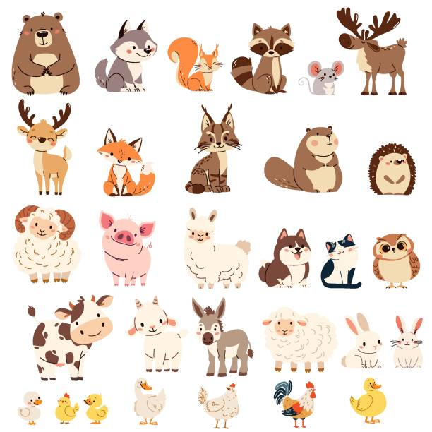

animal(สัตว์)

สิ่งมีชีวิตในอาณาจักร Animalia ซึ่งเป็นสิ่งมีชีวิตหลายเซลล์ ส่วนใหญ่เคลื่อนไหวได้เอง กินอาหารอื่นเป็นพลังงาน และหายใจด้วยออกซิเจน
| คำศัพท์ | คำอ่าน | ความหมาย |
|---|---|---|
| dog | ด็อก | หมา |
| cat | แคท | แมว |
| cow | คาว | วัว |
| pig | พิก | หมู |
| horse | ฮอร์ส | ม้า |
| rabbit | แรบบิท | กระต่าย |
| rat | แรด | หนู |
| elephant | เอเลแฟนท์ | ช้าง |